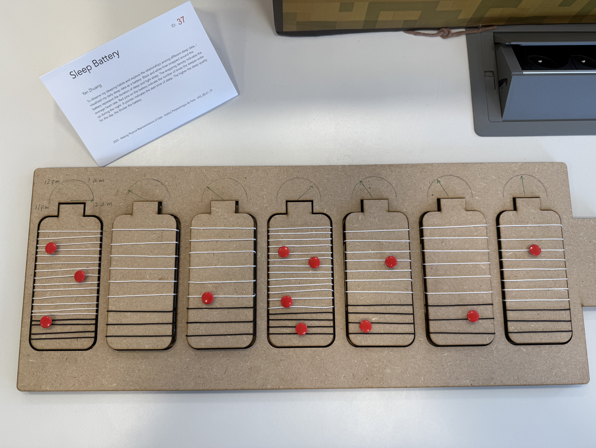

Physicalization - Sleep Battery
Overview
This project is a physicalization of my personal sleep data. I collected two weeks of daily sleep information, including deep sleep, light sleep, wake episodes, average heart rate, sleep score, and my subjective feeling. For the final design, I built a large battery-shaped wooden board holding seven smaller battery-shaped pieces, each representing one day of sleep.
On each small battery, black and white strings show the proportion of deep and light sleep. Red pins represent how many times I woke up during the night. The height of each battery reflects my sleep score, and a small clock drawn above it shows when I started sleeping. Together, these seven batteries let me compare a full week of sleep at a glance and see patterns across different data dimensions.
Tech Stack
Demo
